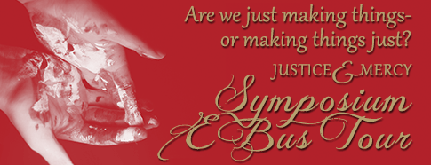

PCPC Arts Festival 2013
-

This year's PCPC Art Festival kicks off with the Amazing Grace concert and Artists' Reception on Friday, November 8, 6:30 pm, in the PCPC Sanctuary, after which the Festival gallery will open for the first time. The festival and concert theme is Justice and Mercy, based on Micah 6:8: Live Justly, Love Mercy, and Walk Humbly with Your God. Doors are open daily, November 9-17, 10:00 am-6:00 pm.
Justice and Mercy (Micah 6:8)
Three themes:
- Live Justly
- Love Mercy
- Walk Humbly with your God
-

Are we just making things — or making things just?
A Symposium Conversation on Justice and Mercy
Friday, September 6, 7:00 – 9:00 pmPart One
Part Two - Q&A
-
Welcome
My name is Dr. Pete Deison--Pete is preferred. I am the founder of the PCPC art outreach program. I call it outreach because the Church through much of its history was the chief patron of the arts. It gave up that role following the Enlightenment. In so doing, there was a great loss on “both sides of the aisle” so to speak. The Church lost its zeal for the creation. The arts lost its zest for the Creator. The Church drifted from its cultural influence. The arts drifted from its spiritual influence. What now exist as a result of that drift are two independent entities that do not realize how much they need each other. Therefore, here at PCPC, we consider our efforts as outreach, or reaching out, to the art world and saying, “Let’s reconnect.”
At PCPC we do not apologize for standing for the Christian faith and belief in Jesus Christ, or that we believe the Old Testament and New Testament are the foundation of truth and the best source of inspiration for creativity. However, we do not make this belief a condition for involvement in our art show or speaking series. We want to reconnect the Church and the art world, and let that dialogue inspire and encourage excellent art.
- Follow us: Twitter / Facebook